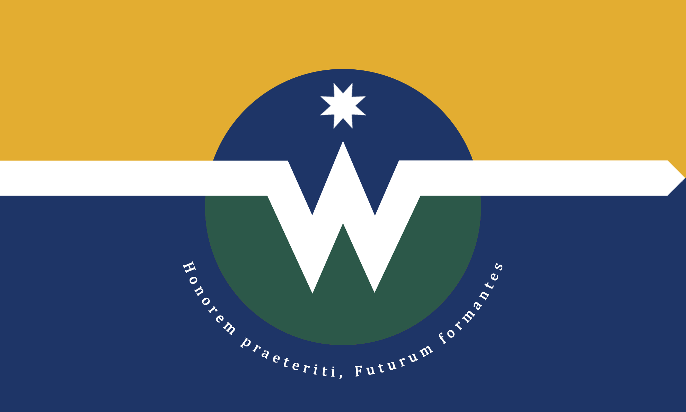

Honorant le passé, façonnant l'avenir.
« Honorem praeteriti, Futurum formantes »
Plus grande ville du Wisconsin et deuxième agglomération des États-Unis, Wellington Bay conjugue héritage colonial, nature des Grands Lacs et urbanisme de nouvelle génération.

Entre la rivière Fox, le lac Michigan et la Baie
Wellington Bay, véritable joyau du Wisconsin, est une métropole dynamique en constante expansion. Nichée à l'estuaire de la rivière Fox, elle s'étend gracieusement entre la sous-embouchure du lac Michigan et les rivages de sa célèbre Baie. Cette situation géographique privilégiée lui confère un charme unique et une beauté naturelle incomparable.
De vastes plateaux verdoyants offrent des espaces idéaux pour l'urbanisme moderne, en symbiose avec la nature environnante. La topographie, parfois vallonnée vers la péninsule, propose des panoramas captivants, tandis que d'autres lieux, plus balnéaires, bordent directement les rivages des Grands Lacs et forment d'importantes zones de loisirs.
Des immeubles-miroirs et des parcs à chaque coin de rue
Les infrastructures de Wellington Bay, dont la construction a nécessité plusieurs milliards, sont remarquablement autonomes et respectueuses de l'environnement. Les immeubles ressemblent à d'immenses miroirs s'élevant vers le ciel, reflétant les nuages. Les quartiers ont été pensés pour éviter toute impression d'anxiété et d'écrasement : espaces verts, jardins communs, parcs et aires de jeu séparent les bâtiments résidentiels et publics, pour coexister paisiblement après une bonne journée de travail.
On s'y réveille le sourire aux lèvres
Grâce à des conditions de vie bien au-dessus de la moyenne nationale et un taux de criminalité inférieur à 4,5 %, la sérénité règne dans la métropole. La municipalité offre en outre un vaste accès aux transports en commun : bus, trams et métros fonctionnent 7 jours sur 7, 24 heures sur 24.
Wellington Bay en bref
- {{ f.k }}
- {{ f.v }}
Le drapeau de Wellington Bay

Au nord-est du Wisconsin, sur les Grands Lacs
Capitale du comté de Brown, Wellington Bay occupe le fond de la Baie, là où la rivière Fox rejoint le lac Michigan. L'autoroute 43 la relie à Milwaukee et à Chicago.
Voir la carte de la ville